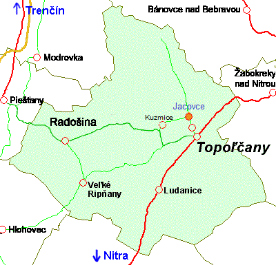
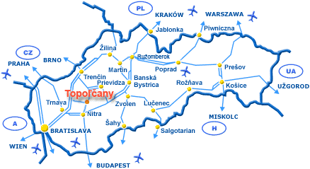

Kontakt  Záhradníctvo Jacovce 8 km Topolčany 36 km Pieštany 36 km Nitra 42 km Hlohovec Otvor adresu v Google Maps Kancelária Alžbeta Sasákova Streďanská 2617 / 31 955 03 Topoľčany Mobil: +421 903 / 477 835 vysadby@vysadby.sk 